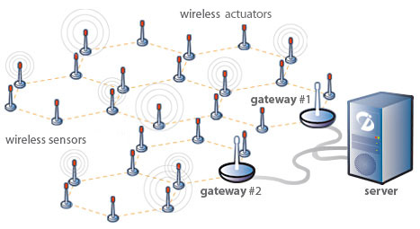

Your browser doesn't support the features required by impress.js, so you are presented with a simplified version of this presentation.
For the best experience please use the latest Chrome, Safari or Firefox browser.
Redes inalámbricas de sensores
Israel Blancas Álvarez

¿Qué es una red inalámbrica de sensores? (WSN)
Es un conjunto de elementos sensores autónomos (llamados motas o nodos) distribuidos en el espacio y que se comunican entre sí de forma
inalámbrica, recogiendo información de sus sensores. En estos nodos no se realiza procesamiento, si no que solo envían información o, como ocurre
en muchas aplicaciones, reciben datos para dar alguna orden a elementos actuadores
Son redes inalámbricas Ad-Hoc (cooperan entre ellas para formar una red) sin infraestructura física preestablecida ni administración central.
¿Cómo surgen?
La posibilidad de crear dispositivos de bajo coste, pequeño tamaño y larga duración sin mantenimiento
con capacidades de obtener información del entorno y enviarla de forma inalámbrica a un centro de procesado, ofrece
solución a multitud de problemas existentes.
Que cada vez la capacidad de cómputo sea mayor a un menor precio y en un menor espacio, ayuda al desarrollo de esta tecnología
Hardware básico de un nodo
- Transceptor: para realizar comunicaciones
- Procesador: pequeños procesamientos
- Sensores: obtener valores digitales del mundo físico
- Memoria: guardar algunos datos
- Batería: alimentar el dispositivo
Puesto que se busca la autonomía del sistema, se desea que el consumo sea mínimo. Es por ello que en esta unidad no se hacen
procesamientos (que consumirían mucha energía)
Topologías
 Estrella
Estrella
|
 Árbol
Árbol
|
 Malla con conexión parcial
Malla con conexión parcial
|
 Mallado con conexión total
Mallado con conexión total
|
Sistemas operativos (I)
- Bertha: modelar, testear y desplegar una red de sensores distribuida de muchos nodos idénticos. Administración de procesos,
manejo de las estructuras de datos, organización de los vecinos, interfaz de red...
- Nut/OS: SO para aplicaciones en tiempo real. Trabaja con CPU de 1 Byte. Multihilo, mecanismos de sincronización, administración de memoria dinámica, temporizadores asíncronos, puertos serie de E/S...
- Contiki: SO para usar en sistemas embebidos (como las motas)
- CORMOS: SO diseñado para WSN
Sistemas operativos (II)
- eCos: SO en tiempo real para aplicaciones y sistemas embebidos que usan solo un proceso
- TinyOS: es de los más conocidos. Escrito en nesC (una variación de C para contrarrestar los problemas de uso de memoria). Está desarrollado
para redes de sensores con recursos limitados. Soporta gran cantidad de microprocesadores. Es un sistema operativo "event-driven", es decir, dirigido a eventos.
Su núcleo ocupa 400bytes. Los comandos de configuración son implementados por el vendedor y los eventos el usuario
- Otros: LiteOS, t-Kernel, MagnetOS...

Lenguajes de programación
- nesC: "dialecto" de C muy utilizado en TinyOS
- SNACK: utilizado como sustituto del anterior cuando el volúmen de datos es muy alto o es preciso hacer muchos cálculos. Más sencillo y eficiente
- Protothreads: diseñado para programación concurrente. Provee de hilos de 2 bytes
- DCL: lenguaje de composición distribuido
- GalsC: programación funcional. Compatible con nesC. Permite concurrencia y es fácil de depurar
- SQTL: lenguaje de consulta sobre motas